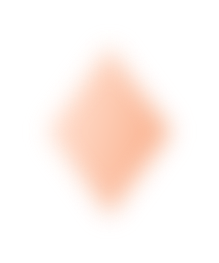

totoo - style guide
Mini design system strony. Wartości pochodzą z tokenów w css/style.css (sekcja :root), a wersja mobilna z css/mobile.css (≤ 760 px). Zmiana tokenu przemalowuje całą stronę. Strona robocza - niepodlinkowana w menu.
Aktualizacja: 20 listopada 2026 (runda 3) - zielony przycisk zawsze z brzoskwiniową ikoną, stałe pole uwag, podkreślone linki w stopce, ciemnozielone boksy, romb podkategorii 17 px, panel boczny 640 px.
Kolory - zieleń
Kolory - szałwia
Kolory - brzoskwinia i krem
Kolory - tekst i linie
Gradienty
Gradienty przycisków są w makiecie pionowe (sprawdzone na eksporcie z Figmy) - nie ukośne.
Typografia
Hero H1Coconat Demi · desktop 80 / mobile 36/42
Holistyczne podejście
H1 / DisplayCoconat Regular + Demi na akcencie
desktop 64 / mobile 36/42
Cześć, miło Cię too gościć!
H2 sekcjiCoconat Regular + Demi na akcencie
desktop 48 / mobile 28/32
Najchętniej wybierane zabiegi
LeadDM Sans Light 300 / Medium 500
desktop 20–32 / mobile 20/26
Od 2017 roku dbamy o naszych pacjentów, świadcząc zabiegi z dziedzin kosmetologii, masażu i fizjoterapii.
TekstDM Sans Regular 400 · desktop 16–18 / mobile 16/22, −1%
Znajdziesz u nas wszechstronną opiekę, rodzinną atmosferę i dobrą energię. Zapraszamy do pracowni totoo - kameralnego, miejskiego spa.
DrobnyDM Sans Regular · 14/20 (stopka, cennik, karty)
Dołącz do naszej listy mailingowej, by dowiadywać się o nowościach i ciekawych ofertach w totoo.
Skala mobilna (makiety 360 px)
| Rola | Krój | Rozmiar / interlinia |
|---|---|---|
| Hero, powitanie | Coconat Demi / Regular | 36 / 42 |
| Nagłówki sekcji i podstron | Coconat Regular + Demi | 28 / 32 |
| Lead podstron | DM Sans Light + Medium | 20 / 26 |
| Tekst | DM Sans Regular | 16 / 22, odstępy −1% |
| Drobny, cennik, stopka | DM Sans Regular / SemiBold | 14 / 20 |
| Tytuły akordeonu Oferty | DM Sans Medium | 20 / 26 |
Krój nagłówków: Coconat (Regular 400 / Demi 600 / Bold 700, pliki lokalne OTF). Tekst: DM Sans (Google Fonts, 300–700). Odstępy w makiecie są mierzone od wersalików do linii bazowej - na stronie odpowiada temu text-box: trim-both cap alphabetic.
Przyciski
Przycisk brzoskwiniowy - blik 1px (powiększenie ×3)
Jasny cień 1 px w prawo i w dół, bez rozmycia (--peach-glint), pod tekstem i ikoną - na każdym brzoskwiniowym przycisku.
Brzoskwiniowy (.btn-peach, przyciski zespołu): gradient pionowy, blik 1 px pod tekstem i ikoną, bez cienia pod przyciskiem i bez uniesienia. Hover: gradient płynnie pogłębia się do grad-peach-deep, ikona przesuwa się o 5 px (strzałka w dół - w dół o 3 px).
Zielony (.btn-green = .btn-dark, jedna receptura): gradient grad-green, biały tekst, ikona zawsze brzoskwiniowa peach-300 - tak samo w newsletterze, formularzu i na stronie głównej.
Zielony / obrys: pastylka --r-pill: 54px, DM Sans 600 16 px, wysokość 52 px (mobile: pola i przyciski formularzy 44 px). Hover: uniesienie −2 px + miękki cień, ikona przesuwa się o 3 px.
Formularz
Pola: obrys 1 px sage-400, pastylka 54 px, fokus - obrys green-800. Select na komputerze ma własną, zaokrągloną listę (r 24, pozycje r 16, podświetlenie cream, obsługa klawiatury); na telefonie zostaje systemowy wybierak. Pole uwag ma stałą wysokość 96 px - bez uchwytu do rozciągania i bez paska przewijania, dłuższy tekst chowa się w polu.
Zaokrąglenia
32 desktop / 12 mobile
24
12 (mobile 8)
54
Ozdobniki
zawsze podłużny 40:54
 gwiazdka
gwiazdka diament SVG
diament SVG
rozmyty diament(powitanie)
 światło (blob z makiety)
światło (blob z makiety)skalowane i obracane
bokeh - pierwszy planZasady: ozdobniki zawsze prosto - bez obrotów i przechyleń, także w animacji (tylko puls skali, światło i parallax). Światła wyłącznie jako akcent: róg pod paskiem nawigacji, lewy dół stopki, narożnik zdjęcia lub bloku. Znaczki tylko w marginesach poza kolumną treści - nigdy na tekście (sprawdza to tools/deco_text_audit.js), w trzech planach: daleki (mały, lekko rozmyty), środkowy (ostry, migocze), bliski (duży, mocno rozmyty, parallax szybszy niż strona). Poniżej 1300 px znaczki z marginesów znikają. Równoboczne romby nie występują.
Ruch
Wejścia przy scrollu: segment ([data-seq]) odsłania się w całości, gdy jego góra wejdzie w kadr - elementy w porządku czytania, z hierarchią: nagłówek słowo po słowie (rv-words), lead z mgły (rv-mist), zdjęcia kurtyną (rv-wipe), wiersze list (rv-row).
Akordeony: kliknięty nagłówek zostaje pod kursorem, także gdy zwija się pozycja powyżej; nisko kliknięty płynnie podjeżdża w górę.
Karuzela: dojazd krytycznie tłumioną sprężyną; hover - 100% krycia, uniesienie, pochylenie za kursorem, żywa flara światła, podkreślenie podpisu.
Zdjęcie „Zapraszamy”: wyostrzenie z mgły (blur + lekki zoom, 2,6 s).
Hover zdjęć: scale 1.04–1.07, 0.7–1.1 s.
Layout: treść 1120px, gutter desktop clamp(20px, 4.4vw, 40px) / mobile 20 px, pasek nawigacji 88 px / mobile 82 px.
Dostępność: wszystkie animacje wyłączane przez prefers-reduced-motion.